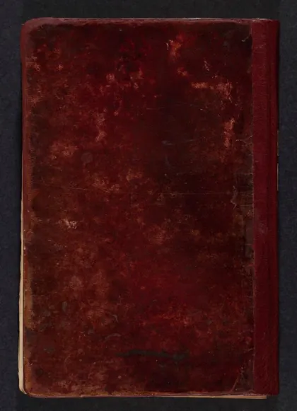

القانون في الطب
Al-Qanun fit Thibb
Baca Al-Qanun fit Thibb (القانون في الطب) karya Ibn Sina (Avicenna) secara gratis di Maktabah Ilmu: teks Arab, Indonesia (sebagian terjemah dibuat AI). Tanpa daftar, tanpa iklan.
Buka kitab iniLihat lemari ilmuDaftar isi
- (خطبة الكتاب) (المقدمة)
- (التعليم الأول) ( [وهو فصلان]
- (التعليم الثاني في الأركان)
- (التعليم الثالث في الأمزجة) (وهو ثلاثة فصول)
- التعليم الرابع الأخلاط وهو فصلان
- التعليم الخامس فصل واحد وخمس جمل (1)
- التعليم الخامس فصل واحد وخمس جمل (2)
- التعليم السادس القوى والأفعال وهو جملة وفصل
- التعليم الأول الأمراض وهو ثمانية فصول
- التعليم الثاني الأسباب وهو جملتان (1)
- التعليم الثاني الأسباب وهو جملتان (2)
- التعليم الثالث الأعراض والدلائل وهو أحد عشر فصلا وجملتان (1)
- التعليم الثالث الأعراض والدلائل وهو أحد عشر فصلا وجملتان (2)
- الفصل المفرد قي سبب الصحة والمرض وضرورة الموت
- التعليم الأول التربية وهو أربعة فصول:
- التعليم الثاني التدبير المشترك للبالغين وهو سبعة عشر فصلا
- التعليم الثالث تدبير المشايخ وهو ستة فصول
- (التعليم الرابع تدبير بدن من مزاجه فاضل) وهو خمسة فصول
- التعليم الخامس الانتقالات وهو فصل مفرد وجملة
- الفصل الأول كلام كلي في العلاج
- الفصل الثاني معالجات أمراض سوء المزاج
- الفصل الثالث أنه كيف ومتى يجب أن يستفرغ
- الفصل الرابع قوانين مشتركة للقيء والإسهال والإشارة إلى كيفية جذب الدواء المسهل والمقيء
- الكلام في الإسهال وقوانينه
- إفراط المسهل ووقت قطعه
- الفصل السابع
- الفصل الثامن تدبير من شرب الدواء ولم يسهله
- (الفصل الحادي عشر القيء
- الفصل الحادي عشر فيما يفعله من تقيأ
- الفصل الثاني عشر منافع القيء
- الفصل الرابع عشر: عشر مضار القيء المفرط
- الفصل الرابع عشر تدارك أحوال تعرض للمتقيء
- تدبير من أفرط عليه القيء
- الفصل السادس عشر الحقنة
- الفصل السابع عشر الأطلية
- الفصل الثامن عشر النطولات
- الفصل التاسع عشر
- الفصل والعشرون الحجامة
- الفصل الثاني والعشرون العلق
- الفصل الثاني والعشرون
- الفصل الثالث والعشرون معالجات السدد
- الفصل الخامس والعشرون معالجات الأورام
- الفصل الخامس والعشرون كلام مجمل في البط
- (الفصل السادس والعشرون علاج فساد العضو) والقطع
- الفصل السابع والعشرون معالجات تفرق الاتصال وأصناف القروح والوثي والضربة والسقطة
- الفصل الثامن والعشرون الكي
- الفصل التاسع والعشرون تسكين الأوجاع
- الفصل الثلاثون وصية في أنا بأي المعالجات نبتدىء
- الكتاب الثاني الأدوية المفردة
- المقالة الأولى أمزجة الأدوية المفردة
- المقالة الثانية في تعرف قوى أمزجه الأدوية بالتجرية
- المقالة الثالثة أمزجة الأدوية المفردة بالقياس
- المقالة الرابعة
- المقالة الخامسة أحكام تعرض للأدوية من خارج
- المقالة السادسة في التقاط الأدوية وادخارها
- (الجملة الثانية ألواح وقواعد في بيان الأدوية المفردة)
- اللوح الأول لوح الأفعال والخواص
- اللوح الثاني الزينة
- اللوح الثالث الأورام والبثور
- الجراح والقروح
… dan 126 bab lainnya.